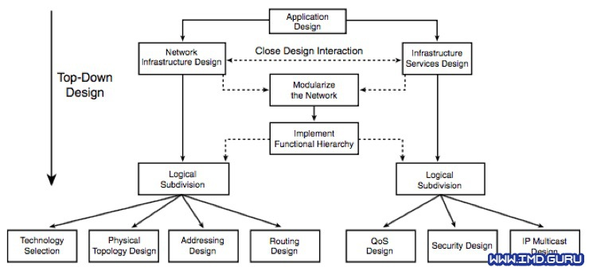

The Top Down model focuses on network design starting from business objectives towards the physical infrastructure.
It consists of several layers: application layer, logical layer, physical layer, transport layer, and infrastructure layer.
This model aligns the network with business needs, improving scalability, performance, and security.
Top Down Model Phases
The process generally follows these steps:
- Business Requirements Analysis: Identifying business needs and goals to define the network's technical requirements.
- Logical Network Design: Creating a conceptual model of the network, including logical architecture, protocols, and required services.
- Physical Network Design: Selecting hardware, cabling, physical topology, and other components needed to implement the logical design.
- Testing, Optimization, and Implementation: Evaluating network performance, making necessary adjustments, and deploying in a production environment.
- Continuous Maintenance: Monitoring, troubleshooting, and regular updates to ensure optimal performance.
This approach provides a clear view of how each network component directly supports the organization's strategic objectives.

Personal Conclusions
Saul Coronel: The Top Down model in network design is a structured and strategic approach that truly emphasizes aligning technology with business goals. Personally, I find it fascinating how starting from high-level requirements and gradually drilling down into technical specifics not only enhances efficiency but also ensures that every network component has a clear purpose. This methodology offers a sense of direction and clarity, making complex network projects more manageable and goal-oriented. Its definitely a model Id consider applying in future projects, as it blends planning with practicality.
Francisco Alvarez: The Top-Down model in network design allows for the development of an infrastructure aligned with the needs of the business and users. By starting the design from the application and service layer instead of the physical infrastructure, it is ensured that the network efficiently supports the specific requirements of the organization.
One of the main benefits of this approach is efficiency and scalability, as it allows for optimizing performance from the start and facilitates future expansion without the need for costly redesigns. In addition, by following a structured plan, errors in implementation are reduced and hasty decisions about hardware or technology are avoided.
Oscar Marquez: The Top-Down model is a methodological approach that allows complex problems to be broken down into more manageable parts, making their analysis and resolution easier. Its application in areas such as programming, system design, and project management enables the structured development of solutions, starting from a general vision down to specific details.
the Top-Down approach is useful for projects that require a well-defined global vision before delving into details. However, it can benefit from complementary approaches to adapt to changes and improve development flexibility.
Yael Herdandez: The Top-Down model is a robust and effective methodology for network design, as it ensures the network is aligned with business objectives and user requirements. Although it requires more time and resources upfront, its structured approach minimizes risks and ensures an efficient and scalable design.
Cristian Duran: The "Top-Down" methodology for designing networks is based on dividing the project into six phases: first, the requirements are analyzed; then, a logical design is created; then, the physical design is developed; the designs are tested and optimized; the network is implemented and, finally, it is continuously monitored and improved. This approach allows for efficient budget control and ensures that the network meets the established objectives.